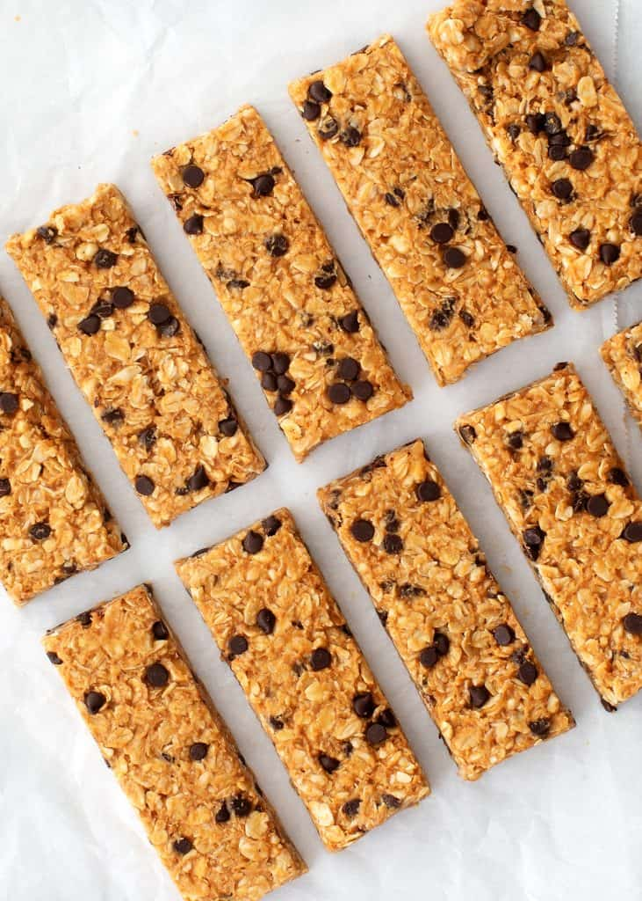
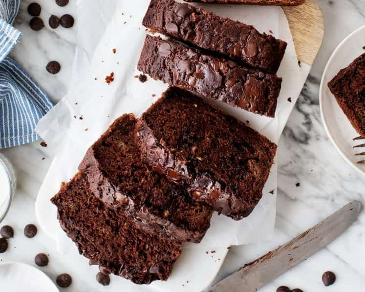

Healthy Snack Alternatives
Frozen Yoghurt Bites
Ingredients
- 2 tbsp clear honey
- 300g/10½oz Greek-style yoghurt
- 300g/10½oz mixed fresh fruit such as strawberries, blueberries, mango and kiwi, chopped into small pieces (blueberries left whole)
- 100g/3½oz chocolate, broken into pieces (optional)
- 30g/1oz granola (optional)
Instructions
- Prepare a large baking tray that can fit in the freezer by lining it with greaseproof paper.
- Cut into small cubes.
- In a bowl, mix together the honey and yoghurt, then combine with the fruits.
-
- Spoon 12 blobs of the yoghurt and fruit mixture onto the tray and place in the freezer for 1 hour.
- If topping with chocolate, after an hour, melt the chocolate in the microwave in 30-second intervals, stirring between or using a bain marie.
- Once the yoghurt is frozen solid, drizzle the melted chocolate over the bites using a piping bag or fork. Sprinkle over the granola and freeze for 20 minutes more.
- Purée the soup.
Homemade Granola Bars

Ingredients
- Natural peanut or cashew butter
- Whole rolled oats
- Honey
- Vanilla extract
- Sea salt
- Pepitas, crushed peanuts, or cashews
- Mini chocolate chips
Instructions
- Stir together the wet ingredients – the cashew or peanut butter, honey, vanilla extract, and salt.
- Cut into small cubes.
- In a bowl, mix together the honey and yoghurt, then combine with the fruits.
-
- Spoon 12 blobs of the yoghurt and fruit mixture onto the tray and place in the freezer for 1 hour.
- If topping with chocolate, after an hour, melt the chocolate in the microwave in 30-second intervals, stirring between or using a bain marie.
- Once the yoghurt is frozen solid, drizzle the melted chocolate over the bites using a piping bag or fork. Sprinkle over the granola and freeze for 20 minutes more.
Chocolate Zucchini Bread

Ingredients
- 2½ cups all-purpose flour, spooned and leveled
- ⅓ cup unsweetened cocoa powder, sifted if lumpy
- 1 tablespoon baking powder
- 1 teaspoon baking soda
- 1 teaspoon sea salt
- 1 teaspoon cinnamon
- ½ teaspoon nutmeg
- 3 large eggs
- 1 cup vegetable oil
- 1 cup granulated sugar
- 2 teaspoons vanilla extract
- 3 cups shredded zucchini
- 1 cup semisweet chocolate chips, plus more for sprinkling
Instructions
- Preheat the oven to 350°F and lightly spray two 8x4” loaf pans with nonstick spray.
- In a medium bowl, whisk together the flour, cocoa powder, baking powder, baking soda, salt, cinnamon, and nutmeg.
- In a large bowl, whisk together the eggs, vegetable oil, sugar, and vanilla. Stir in the zucchini. Add the dry ingredients to the wet ingredients and stir until just combined. The batter will be fairly thick—that's ok. Don’t overmix. Fold in the chocolate chips.
- Evenly divide the batter between the prepared loaf pans and use a spatula to smooth the top. Sprinkle with more chocolate chips and bake for 40 to 60 minutes, or until a toothpick inserted into the center comes out clean and the tops spring back to the touch. Remove from the oven and allow to cool completely.